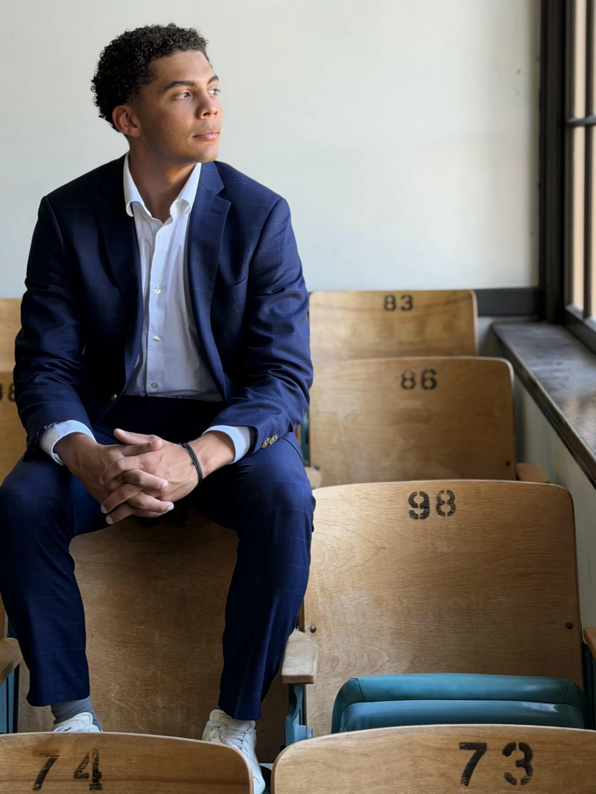

University of Southern California · Class of 2029
I have been writing to change things since fourth grade.
I'm Justin Blanding: a student at USC, a published author, and someone who has always felt the need to stand up for people who get overlooked. This is where I keep my writing, my speeches, and a little about who I am.
About
In my own words
I was born on October 19, 2006, in Newburgh, New York, but I grew up in rural Northeast Pennsylvania. My parents come from entirely different worlds, and that difference shaped everything about my upbringing. My mother is a second-generation Italian and German American raised in the suburbs; my father is a Black American who grew up in inner-city Newburgh at the height of its violent crime. To keep me away from that, my parents moved us to rural Pennsylvania.
There, crime and drugs weren’t my biggest concern. Being one of the only Black kids in my community was. My childhood came with battles. I heard racial slurs as early as second grade. In fourth grade, I began writing letters to protest my school board to make Martin Luther King Jr. Day a school holiday. Eventually, I helped push my district to make its K–12 curriculum more diverse.
Those battles taught me two things I’ve carried with me ever since. First, I’ve always felt the need to stand up for people who are overlooked, and second, that real change happens when you understand how institutions work from the inside. That’s what brought me to the University of Southern California, where I’m pursuing a B.S. in Business Administration with an emphasis in finance, Class of 2029.
I’m drawn to argument, writing, and reform, and my goal is to spend my career inside the institutions that shape people’s lives, so that I can change them for the better. I’d rather build something with purpose than simply build wealth, and that’s the standard I hold myself to.
Essays & speeches
Things I've written and said
-
Book · PDF
Land of the Free - Children's books
By Justin Blanding. The book I wrote and published with the American Reading Company.
-
Speech · PDF
9th grade school board recognition speech
What I said to my school board when they recognized the book.
-
Essay · PDF
Cornell 7
On the Cornell 7 case, my niece, and what it means to be a man.
Off the clock
Interests and Hobbies
Basketball
1,000-point scorer in high school. Now on a USC intramural team, and a former volunteer coach for the youth biddy basketball program back home in Hawley.
Books
Mostly non-fiction, from authors like Ta-Nehisi Coates and books like The Autobiography of Malcolm X.
Podcasts
The Daily, The Town, NPR's Up First and Planet Money, and the FT News Briefing.
Music
R&B, soul, hip-hop, and pop.
Contact